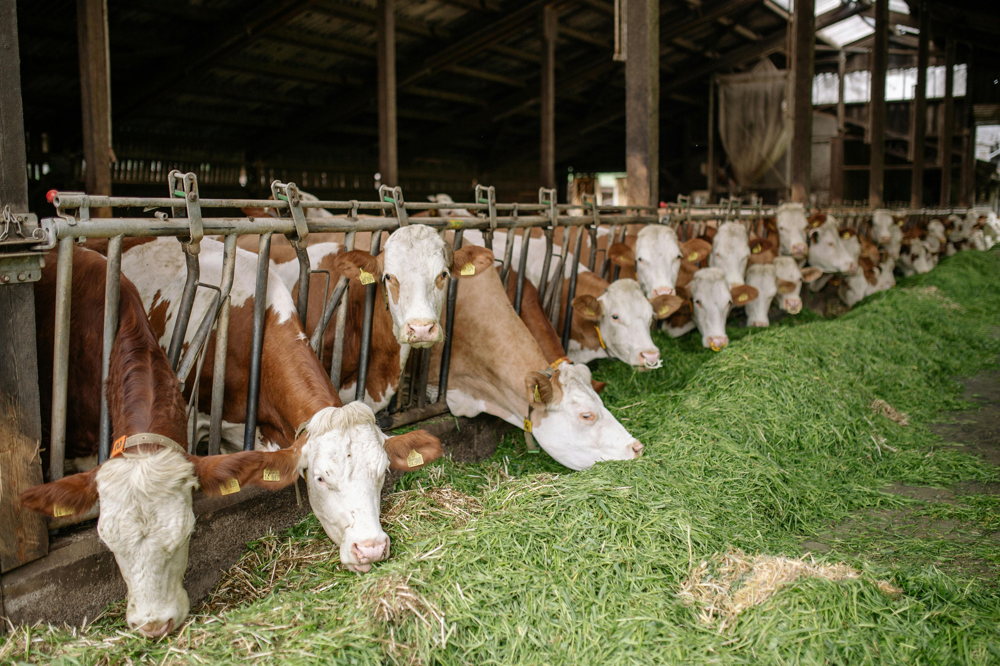
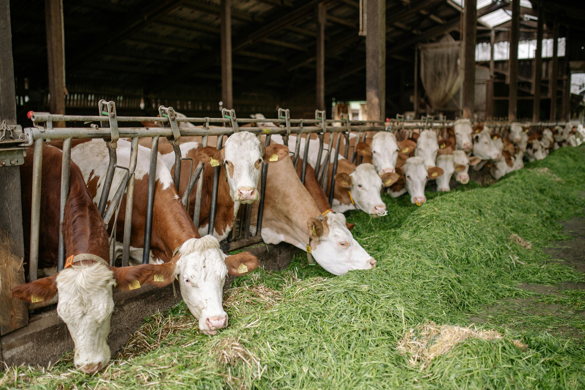

Welcome to Green Animal Farm Page
The best organic animal products you will ever find
 


We provide the highest quality organic animal products sourced from our own farm.
Our products include:
- Organic Poultry
- Grass-Fed Beef
- Free-Range Pork
- Fresh Eggs
- Organic Dairy Products
About Us
Founded in the year 2009, our farm is an established entity running throught the year.
Our farm is dedicated to sustainable practices and the well-being of our animals.
We believe in providing our customers with the best organic products while ensuring that our animals are treated with care and respect.
Our farm is located in the heart of the countryside, where we have ample space for our animals to roam freely and live healthy lives.
We are committed to transparency and quality, ensuring that every product we offer meets the highest standards.
Visit us to experience the difference of farm-fresh organic products.
Contact Us
We are located at 123 Countryside Lane, Green Valley, Country.
Email us at:CEO Animal Farm
Follow us on social media for updates and promotions.